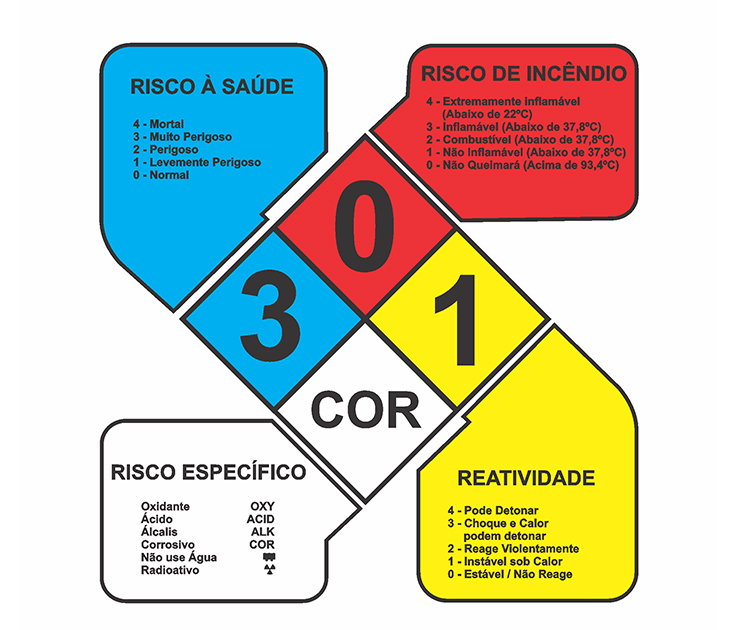

Resíduos Orgânicos
Os resíduos orgânicos são materiais de origem biológica, animal ou vegetal, como restos de comida, cascas de frutas, legumes, borra de café e podas de jardim. Eles representam cerca de 50% de todo o lixo urbano gerado no Brasil e, quando descartados em aterros, liberam gases de efeito estufa.
Resíduos Recicláveis
Resíduos recicláveis são materiais que podem passar por processos de transformação e retornar ao ciclo produtivo, em vez de virarem lixo comum. Os principais grupos incluem papel, plástico, vidro e metal, e a separação correta ajuda a proteger o meio ambiente e apoia o trabalho de catadores.
Resíduos Eletrônicos
Resíduos eletrônicos, ou e-lixo, são todos os aparelhos quebrados, velhos ou que não servem mais e são movidos a eletricidade ou bateria. Eles incluem celulares, computadores, televisores, geladeiras e pilhas. O descarte incorreto no lixo comum espalha metais pesados perigosos no solo e na água.

Resíduos Perigosos
Resíduos perigosos (ou Classe I) são materiais descartados que apresentam riscos reais ou potenciais à saúde pública e ao meio ambiente devido a propriedades como inflamabilidade, corrosividade, reatividade, toxicidade ou patogenicidade. Exemplos comuns incluem pilhas, baterias, óleos, lâmpadas de mercúrio, restos de tintas e lixo hospitalar.

Descarte Correto
Orgânicos
Seque os restos de alimentos antes de ensacar.
Deposite na lixeira de resíduos úmidos ou orgânicos.
Direcione para a compostagem caseira ou comunitária sempre que possível.
Recicláveis
Lave as embalagens para remover resíduos de alimentos.
Seque os materiais para não inutilizar os papéis.
Coloque em sacos separados para a coleta seletiva.
Eletrônicos
Remova baterias internas antes de entregar o aparelho.
Apague todas as informações pessoais do sistema de armazenamento.
Entregue em pontos de coleta de lojas ou cooperativas.
Perigosos
Separe por tipo para evitar reações químicas perigosas.
Guarde em recipientes fechados, rígidos e bem protegidos.
Devolve em postos de coleta de supermercados ou farmácias.